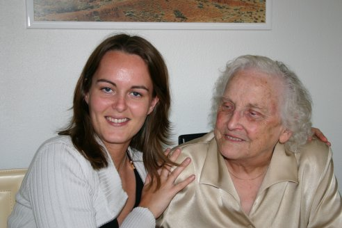
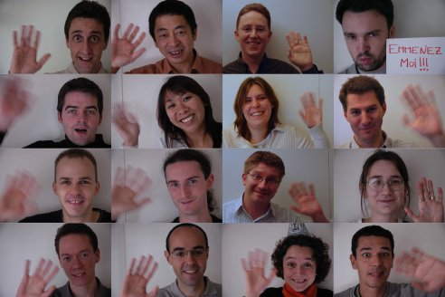
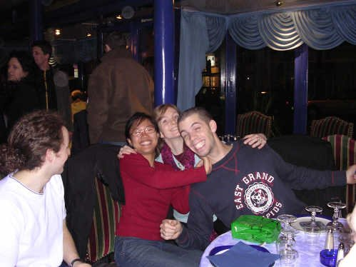
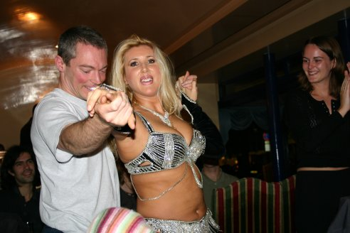

Soirées de départ
29 oct 2004 - Soirée chez Cécile sur Rouen
1er nov 2004 - Dîner avec la famille d’Eve-laure pour fêter le départ 
4 nov 2004 - Cadeau d’au revoir de la part de nos collègues de boulot : ils nous souhaitent tous (enfin, presque tous...) un bon voyage ! 
5 nov 2004 - Grande soirée de départ sur Paris dans un restaurant kurde "chez Seç". Tous nos amis sont là pour fêter notre départ... Ca représente quand même un total de 50 personnes !  
12 nov 2004 - Déjeuner dans un superbe restaurant près du Touquet avec la famille de Michaël
19 nov 2004 - Soirée chez Hélène et Nico
20 nov 2004 - Soirée chez Théo et Stéphanie